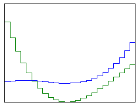
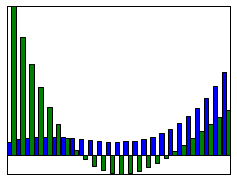
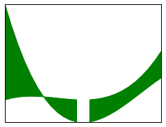
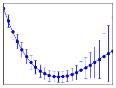
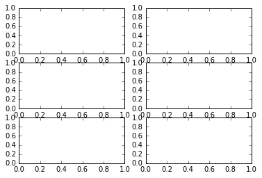

4. 数据绘图（Matplotlib）¶
In [1]:
%matplotlib inline
In [2]:
import matplotlib as mpl
import matplotlib.pyplot as plt
In [3]:
import numpy as np
4.1. Get started¶
画布和图型（Figure and Axis)
In [4]:
x = np.linspace(-5, 2, 100)
y1 = x**3 + 5*x**2 + 10
y2 = 3*x**2 + 10*x
y3 = 6*x + 10
y4 = x**2
In [5]:
len(x) # 100 个从-5 — 2 的数值
Out[5]:
100
最简单的创建办法是这样的
In [6]:
plt.plot(x, y1);

plt.subplots 是一种简便的创建图表的办法，他会创建一个新的 Figure，并返回一个数组
In [7]:
fig,ax = plt.subplots(2, 3)

In [8]:
x = np.linspace(-5, 2, 100)
y1 = x**3 + 5*x**2 + 10
y2 = 3*x**2 + 10*x
y3 = 6*x + 10
y4 = x**2
In [9]:
x1 = -3.33;
y5 = x1**3 + 5*x1**2 + 10;
print y5
28.518463
In [ ]:
In [10]:
fig, ax = plt.subplots()
ax.plot(x, y1, color="blue", label="y(x)") # 定义x, y, 颜色，图例上显示的东西
ax.plot(x, y2, color="red", label="y'(x)")
ax.plot(x, y3, color="green", label="y''(x)")
ax.set_xlabel("x") # x标签
ax.set_ylabel("y") # y标签
ax.legend(); # 显示图例

更复杂的例子
In [11]:
x = np.linspace(-5, 2, 100)
y1 = x**3 + 5*x**2 + 10
y2 = 3*x**2 + 10*x
y3 = 6*x + 10
y4 = x**2
In [12]:
fig, ax = plt.subplots(figsize=(8, 5)) # 定义画布和图形
ax.plot(x, y1, lw=1.5, color="blue", label=r"$y(x)$")
ax.plot(x, y2, lw=1.5, color="red", label=r"$y'(x)$")
ax.plot(x, y3, lw=1.5, color="green", label=r"$y''(x)$")
# 画线，画点，线是由点组成的，可以理解为多个点就组成了线
ax.plot(x, np.zeros_like(x), lw=0.5, color="black") # lw指的是粗细
ax.plot([-3.33, -3.33], [0, (-3.3)**3 + 5*(-3.3)**2 + 10], lw=0.5, ls="--", color="black")# 有时只要知道 x 就行了
ax.plot([0, 0],[0, 10], lw=0.5, ls="--", color="black") # 这个得把相交的点先求值才行
ax.plot([0], [10], lw=0.5, marker='h', color="blue")
ax.plot([-3.33], [(-3.3)**3 + 5*(-3.3)**2 + 10], lw=0.5, marker='o', color="blue")
ax.set_ylim(-15, 40) # 设定y轴上下限
ax.set_yticks([-10, 0, -5, 10, 20, 30])# 故意加一个 -5，有点违和感
ax.set_xticks([-4, -2, 0, 2])
ax.set_xlabel("$x$", fontsize=18) # 设定字体大小
ax.set_ylabel("$y$", fontsize=18)
ax.legend(loc=0, ncol=3, fontsize=14, frameon=False) # loc 等于自己找位置去，ncol 等于列，最后是不要框框
# plt.style.use('ggplot');
Out[12]:
<matplotlib.legend.Legend at 0x106545410>

In [13]:
yticks = np.arange(-10, 40, 10)
In [14]:
yticks
Out[14]:
array([-10, 0, 10, 20, 30])
In [15]:
ax.legend??
In [ ]:
In [16]:
fig = plt.figure(figsize=(8, 2.5), facecolor="#f1f1f1")
# axes coordinates as fractions of the canvas width and height
left, bottom, width, height = -0.1, -0.1, 0.8, 0.8 # 这一句没看懂，明天保存之后看看
ax = fig.add_axes((left, bottom, width, height), axisbg="#e1e1e1")
x = np.linspace(-2, 2, 1000)
y1 = np.cos(40 * x)
y2 = np.exp(-x**2)
ax.plot(x, y1 * y2)
ax.plot(x, y2, 'g')
ax.plot(x, -y2, 'g')
ax.set_xlabel("x")
ax.set_ylabel("y")
Out[16]:
<matplotlib.text.Text at 0x1061f0e90>

In [17]:
fig, ax = plt.subplots(nrows=3, ncols=2)

In [18]:
plt.Axes.bar??
例子 4-7：
In [19]:
x = np.linspace(-5, 5, 5)
y = np.ones_like(x)
In [20]:
x
Out[20]:
array([-5. , -2.5, 0. , 2.5, 5. ])
In [21]:
y
Out[21]:
array([ 1., 1., 1., 1., 1.])
In [22]:
def axes_settings(fig, ax, title, ymax):
ax.set_xticks([]) #??
ax.set_yticks([])
ax.set_ylim(0, ymax+1)
ax.set_title(title)
In [23]:
fig, axes = plt.subplots(1, 4, figsize = (16, 3))

下面两行没还没想清楚
In [ ]:
**??**
x = np.linspace(-5, 5, 5)
y = np.ones_like(x)
def axes_settings(fig, ax, title, ymax):
ax.set_xticks({}) #??
ax.set_yticks([])
ax.set_ylim(0, ymax+1)
ax.set_title(title)
fig, axes = plt.subplots(1, 4, figsize = (16, 3))
linewidths = [0.5, 1.0, 2.0, 4.0]
for n, linewidth in enumerate(linewidths):
axes[0].plot(x, y + n, color="blue", linewidth=linewidth)
axes_settings(fig, axes[0], "linewidth", len(linewidths))
In [24]:
# ??
linestyles = ['-', '-.',":"]
for n, linestyle in enumerate(linestyles):
axes[1].plot(x, y + n, color="")
4.2. Plot types¶
In [25]:
fignum = 0
def hide_labels(fig, ax): # 隐藏 Labels，如图例，x/y 的属性等
global fignum # ？？
ax.set_xticks([]) # 无 x 轴刻度
ax.set_yticks([]) # 无 y 轴刻度
ax.xaxis.set_ticks_position('none') # 无刻度杠
ax.yaxis.set_ticks_position('none')
ax.axis('tight')
fignum += 1
In [26]:
x = np.linspace(-3, 3, 25)
x
Out[26]:
array([-3. , -2.75, -2.5 , -2.25, -2. , -1.75, -1.5 , -1.25, -1. ,
-0.75, -0.5 , -0.25, 0. , 0.25, 0.5 , 0.75, 1. , 1.25,
1.5 , 1.75, 2. , 2.25, 2.5 , 2.75, 3. ])
In [27]:
p = np.arange(-3, 3, 0.25)
p
Out[27]:
array([-3. , -2.75, -2.5 , -2.25, -2. , -1.75, -1.5 , -1.25, -1. ,
-0.75, -0.5 , -0.25, 0. , 0.25, 0.5 , 0.75, 1. , 1.25,
1.5 , 1.75, 2. , 2.25, 2.5 , 2.75])
In [28]:
y1 = x**3 + 3*x**2 + 10
y2 = -1.5*x**3 + 10*x**2 - 15
y3 = x**3
In [29]:
fig, ax = plt.subplots(figsize=(4, 3))
ax.plot(x, y1) # plot 是线图
ax.plot(x, y2)
ax.plot(x, y3)
hide_labels(fig, ax)

In [30]:
fig, ax = plt.subplots(figsize=(4, 3))
ax.step(x, y1) # step 是阶梯图
ax.step(x, y2)
# ax.step(x, y3) # 加一条会自己生成红色
hide_labels(fig, ax)

In [31]:
fig, ax = plt.subplots(figsize=(4, 3))
width = 6/50.0 # width 是宽度，0.12 是 x 间隔的一半
ax.bar(x - width/2, y1, width=width, color="blue") # bar 柱型图，主要分析离散数据
ax.bar(x + width/2, y2, width=width, color="green")
hide_labels(fig, ax) # 没加这条图会变的很小

In [32]:
width
Out[32]:
0.12
In [33]:
6/50 # 没加.0,自然就没有浮点数了
Out[33]:
0
In [34]:
fig, ax = plt.subplots(figsize=(4, 3))
ax.fill_between(x, y1, y2, y3, color="green") # 中间为何是空的，不太明白
hide_labels(fig, ax)

In [35]:
fig, ax = plt.subplots(figsize=(4, 3))
ax.hist(y2, bins=30)
ax.hist(y1,bins=30) # 判断的是连续变量，打成了30组
hide_labels(fig, ax)

In [36]:
fig, ax = plt.subplots(figsize=(4, 3))
ax.errorbar(x, y2, yerr=y1, fmt="o-") # errorbar 应该是误差棒的意思，点的上下线
hide_labels(fig, ax)

In [37]:
fig, ax = plt.subplots(figsize=(4, 3))
ax.stem(x, y2, 'b', markerfmt='bs') # r,是代表颜色，markerfmt 是形状
ax.stem(x, y1, "r", markerfmt='ro') # 这种图主要把x的高度标出来
hide_labels(fig, ax)

In [38]:
ax.stem??
In [39]:
fig, ax = plt.subplots(figsize=(4, 3))
x = np.linspace(0, 5, 50)
ax.scatter(x, -1 + x + 0.25 * x**2 + 2 * np.random.rand(len(x)))
ax.scatter(x, np.sqrt(x) + 2 * np.random.rand(len(x)), color='green') # sqrt是什么含义？？
hide_labels(fig, ax)

4.3. Advanced Features¶
In [40]:
fig, ax = plt.subplots(figsize=(8, 4))
x = np.linspace(-20, 20, 100)
y = np.sin(x) / x
ax.plot(x, y)
ax.set_ylabel("y label")
ax.set_xlabel("x label")
for label in ax.get_xticklabels() + ax.get_yticklabels(): # get到标度,后循环set
label.set_rotation(45) # 然后旋转45度

Axes¶
In [41]:
fig, axes = plt.subplots(ncols=2, nrows=3) # 生成一个 2*3 的图形画布, 为何这里不能用 ax

data1
In [42]:
fig, axes = plt.subplots(1, 2, figsize=(8, 3.5), sharey=True) # sharey 则是代表是否同用一个 y 轴
data1 = np.random.randn(200, 2) * np.array([3, 1]) #产生两列符合标准正太分布的100组数据，做了一个广播，第一列乘以3，第二列乘以1，把标准差扩大了
#area2 = (np.random.randn(200) + 0.5) * 100
data2 = np.random.randn(200, 2) * np.array([1, 3]) #data1 是在x的方向扩大了变异度，data2是在y的方向
# area2 = (np.random.randn(200) + 0.5) * 100
# 第一列当作x，第二列当作y,marker是形状，size 是大小，alpha 是透明度
axes[0].scatter(data1[:,0], data1[:,1], color="green", marker="s", s=30, alpha=0.5) # alpha 是大小的意思，上限是1
axes[0].scatter(data2[:,0], data2[:,1], color="blue", marker="o", s=30, alpha=0.5) # 加了另外一组数据之后，由于刻度的变化整个图形也有所变化
axes[1].hist([data1[:,1], data2[:,1]], bins=15, color=["green", "blue"], alpha=0.5, orientation='horizontal');# []是代表有两组图

legends 调节图例¶
In [43]:
fig, axes = plt.subplots(1, 4, figsize=(16,4))
x = np.linspace(0, 1, 100)
for n in range(4):
axes[n].plot(x, x, label="y(x) = x" )
axes[n].plot(x, x + x**2, label="y(x) = x + x**2")
axes[n].legend(loc=n+1) # 一行把所有的图例都加上了，for 循环的魅力，如果没有+1，则变成 0，0，1，2
axes[n].set_title("legend(loc=%d)" % (n+1)) # 原来格式化字符还可以这么玩
## ??理解下n=1，2，3，4 时有什么区别

4.4. Advanced grid layout¶
inset¶
In [44]:
fig = plt.figure(figsize=(8, 4))
def f(x):
return 1/(1 + x**2) + 0.1/(1 + ((3 -x)/0.1)**2)
def plot_and_format_axes(ax, x, f, fontsize): ## ?? 定义里面的那张图，x，尺寸
ax.plot(x, f(x),linewidth=2)
ax.xaxis.set_major_locator(mpl.ticker.MaxNLocator(5))
ax.yaxis.set_major_locator(mpl.ticker.MaxNLocator(4))
ax.set_xlabel(r"$x$", fontsize=fontsize)
ax.set_ylabel(r"$f(x)$", fontsize=fontsize)
# main graph 主要的图
ax = fig.add_axes([0.1, 0.15, 0.8, 0.8], axisbg="#f5f5f5")
x = np.linspace(-4, 14, 10000) #
plot_and_format_axes(ax, x, f, 18)
# inset
x0, x1 = 2.5, 3.5 # 小图x的上下界
ax = fig.add_axes([0.5, 0.5, 0.38, 0.42], axisbg="none") #这条是定义4个角的位置 axisbg 是？？是没有颜色的意思吗？
x = np.linspace(x0, x1, 1000)
plot_and_format_axes(ax, x, f, 14)
# ？？ 理解下那个小块具体是怎么画出来的

In [45]:
ncols, nrows = 3, 3
fig, axes = plt.subplots(nrows, ncols)
for m in range(nrows):
for n in range(ncols):
axes[m, n].set_xticks([]) # 所有的x轴标度干掉,
axes[m, n].set_yticks([])
axes[m, n].text(0.5, 0.5, "axes[%d, %d]" % (m, n),
horizontalalignment='center') # ？？那个长的我都不想输的单词是说放图里码？

In [46]:
fig, axes = plt.subplots(2, 2, figsize=(6, 6), sharex=True, sharey=True, squeeze=False) # squeeze 可以 y 轴隐藏,yb'ig
x1 = np.random.randn(100) # 生成一维的100个数组
x2 = np.random.randn(100)
axes[0, 0].set_title("Uncorrelated")
axes[0, 0].scatter(x1, x2)
axes[0, 1].set_title("Weakly positively correlated")
axes[0, 1].plot(x1, x1 + x2)
axes[1, 0].set_title("Weakly negatively correlated")
axes[1, 0].scatter(x1, -x1 + x2) # 负相关
axes[1, 1].set_title("Strongly correlated")
axes[1, 1].scatter(x1, x1 + 0.15 * x2) # 减少x2 的分量，强相关了
axes[1, 1].set_xlabel("x")
axes[1, 0].set_ylabel("y")
axes[0, 0].set_ylabel("y")
axes[1, 0].set_xlabel("x")
Out[46]:
<matplotlib.text.Text at 0x1060d0510>

查看 Matplotlib 的 style
In [47]:
print plt.style.available
[u'seaborn-darkgrid', u'seaborn-notebook', u'classic', u'seaborn-ticks', u'grayscale', u'bmh', u'seaborn-talk', u'dark_background', u'ggplot', u'fivethirtyeight', u'seaborn-colorblind', u'seaborn-deep', u'seaborn-whitegrid', u'seaborn-bright', u'seaborn-poster', u'seaborn-muted', u'seaborn-paper', u'seaborn-white', u'seaborn-pastel', u'seaborn-dark', u'seaborn-dark-palette']